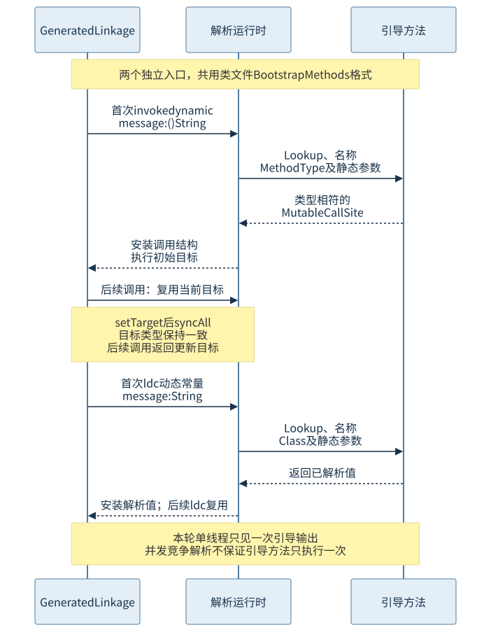

第四篇 · 执行引擎与动态编译
第 15 章 动态调用、反射与运行时生成
动态机制先建立带类型的调用结构，再重复执行它。链接、适配、目标更新和持有关系分别决定正确性与优化空间。
从现象开始
本章GeneratedLinkage的两个方法看起来都返回字符串：一个可更新调用目标，另一个复用已解析常量。沿类文件引导信息解释这个差异，再把它联系到Lambda、拼接、反射与代理。技术基线为Java开发工具包（Java Development Kit，JDK）25.0.5.0.2，HotSpot、macOS AArch64。
15.1 方法句柄与类型适配
本节配图：CH15-F02。
15.1.1 句柄是带类型的执行能力
方法句柄MethodHandle指向方法、构造器、字段操作或组合后的行为；MethodType记录返回类型与参数类型序列。它不是一个只有名字的反射字符串。Lookup在查找时携带调用者访问能力；创建成功的句柄可以封装该能力，传给其他组件后需按能力发布来考虑权限。参数同名也不意味着两个MethodType等价，类型身份仍包含第6章的加载器因素。
本例findStatic取得add:(int,int)int，再用insertArguments绑定第0个参数7，形成(int)int。调用时只传第二个参数。组合句柄不要求用户手写一个适配类文件；实现可借助LambdaForm等内部表示，编译器再沿稳定链内联。

15.1.2 精确调用与可适配调用
invokeExact的调用端描述符由实参和返回上下文共同决定。即使句柄结果是int，忽略结果让调用端变成void也不等价。本例(int)bound.invokeExact(5)精确匹配；(long)bound.invoke((byte)5)允许byte扩展为int，再把int结果扩展为long，两者均输出12。invoke不是任意转换许可，asType也有明确的引用转换、拆装箱和数值适配规则。
这些调用在类文件中仍常是签名多态invokevirtual，不因方法名含invoke就变成invokedynamic。判断指令必须看字节码。本例不主动触发WrongMethodTypeException；错误约束由类型契约解释。
15.2 动态调用点链接
本节配图：CH15-F01。
15.2.1 从类文件引导信息建立调用行为
普通Java源码不直接写自定义invokedynamic指令，本章用JDK类文件应用程序编程接口（Application Programming Interface，API）生成GeneratedLinkage。dynamic方法只含invokedynamic与areturn；常量池项关联名称message、方法描述符()String和BootstrapMethods中的引导句柄。首次需要链接时，运行时提供调用者Lookup、名称、MethodType及静态参数，引导方法返回类型相符的CallSite。
MethodHandleNatives::linkCallSiteImpl调用CallSite.makeSite，随后区分ConstantCallSite与其他调用点，返回不同链接路径和附加信息。引导建立的是合法调用行为，后续每次调用不重复按名字搜索同一方法。类文件生成器是本书程序，不能冒充HotSpot的动态语言实现。

15.2.2 动态目标也能提供稳定优化机会
ConstantCallSite固定目标；MutableCallSite允许setTarget但具有普通字段式可见性，需要适当同步或syncAll；VolatileCallSite提供另一种可见性协议。目标改变必须保持调用点的MethodType。本例单线程修改后调用syncAll，输出由初始目标改为更新目标；这没有测量跨线程更新延迟。
并发竞争解析时，引导方法可能被执行多次，最终选定的解析结果供调用点使用。不要让引导方法的无保护外部副作用依赖“全局只执行一次”。稳定目标与适配链可被优化，目标更新又会要求运行时维持正确性；动态调用与优化可以共存，但不会自动免除类型与同步约束。
15.3 动态常量
15.3.1 解析值，与解析调用行为不同
constant方法的ldc引用CONSTANT_Dynamic，类型描述符是String而不是()String方法类型。引导时第三个参数为Class，返回值须满足常量类型约束。动态调用返回CallSite以描述行为；动态常量返回供常量池保存的值。名字都叫message，不会让两个常量池结构共享同一种解析结果。
本例bootstrapConstant返回已解析值。连续两次调用constant，只出现一次本轮引导日志，值相同。它不同于每次调用getter重新计算；也不能把一个动态常量当成可用setTarget替换的调用点。
15.3.2 生命周期与失败也是链接的一部分
引导参数可以依赖其他常量、方法类型或句柄，解析链可能引入类加载和访问检查。失败按规范形成链接错误及相应缓存行为，递归依赖也不能凭“延迟求值”自动解决。结果为对象引用时，运行时常量池及相关结构会保留该引用；其生命周期要沿所属类与加载器分析。
MethodHandleNatives::linkDynamicConstantImpl转交ConstantBootstraps.makeConstant，HotSpot常量池解析路径负责安装结果及错误记录。没有在正常教学进程里制造引导失败，因此这里的失败规则依据规范与实现，而非伪造失败输出。
15.4 Lambda与字符串拼接
本节配图：CH15-F03。
15.4.1 捕获发生在函数对象创建时
javap显示Lambda调用点进入LambdaMetafactory；捕获参数bias=7传入工厂，生成的函数对象再接受applyAsInt的value参数。它捕获的是当时的值；若捕获引用，则保存该引用值，之后对象自身仍可变化。实现函数lambda$main$0与函数式接口方法之间需要相应参数与返回适配。

本轮operation.getClass().isHidden为true，与锁定InnerClassLambdaMetafactory生成隐藏实现类的路径相符。隐藏实现类的名称、实例是否复用和对象身份不作为Java语言承诺。Lambda表达式的创建与apply调用是不同动作，不能把后续调用成本包含进首次链接后便混作一项。
15.4.2 拼接描述配方，语义仍在语言层
本章含运行时字符串拼接，BootstrapMethods显示StringConcatFactory.makeConcatWithConstants和配方参数。调用点描述动态参数位置、静态文本及结果类型，实现再组织适合的拼接步骤。不能因老版本曾生成StringBuilder，就断言JDK25每个加号都创建同样的中间对象。
常量折叠后的纯字面量拼接可能没有运行时调用点；具体生成策略取决于编译器与版本。字符串内容、求值顺序和允许抛出的异常仍须满足语言语义；调用点能优化并不改变这些要求。本轮仅记录链接与加载，未统计首次成本与稳定耗时。
15.5 反射、代理与运行时类生成
本节配图：CH15-F04。
15.5.1 包装入口不会消除真正目标
Method.invoke包含访问与参数处理，再转交方法访问器。JDK25的ReflectionFactory::newMethodAccessor委托MethodHandleAccessorFactory，DirectMethodHandleAccessor使用方法句柄调用实际目标，并按反射契约包装目标异常。本例Method来自Greeting接口，实际对象是Greeter；正常输出你好，读者。
动态代理生成实现指定接口的代理类，将调用转交InvocationHandler。处理器再调用原Method和target，构成代理→处理器→反射访问器→Greeter的链。若处理器直接invoke同一个代理，会递归回来；本例明确转交target。equals、hashCode、toString及异常契约也需具体策略，不能把本例只展示greet的处理器直接当成完整业务代理框架。
15.5.2 可生成，不等于可无限持有
Lookup.defineClass要求包与访问能力匹配，生成类不是任意权限绕过。隐藏类适合不需要普通名称发现的实现结构，但实例、句柄、调用点与缓存仍可持有它们。代理、Lambda或句柄进入长期全局缓存时，相关对象和加载器可能一同保留；第8、12章的持有链分析继续适用。
本例GeneratedLinkage使用普通定义，Lambda实现观察到隐藏类；两者不能混称“全部动态类都是隐藏类”。单个小进程没有测卸载，不把正常退出当成缓存或加载器生命周期已经逐项验证。

证据与复做
句柄精确／适配调用均得到12，Lambda首次12、后续13且实现类isHidden=true；反射与代理都转到Greeter。动态调用引导一次输出后，三次结果为初始目标、初始目标、更新目标；动态常量引导一次输出后两次均为已解析值。单线程输出不扩大为并发引导恰好一次保证。
回顾与边界
先问解析产物是值还是调用行为，再检查调用类型与访问能力，最后追到实际目标和持有者。首次链接、函数对象创建与后续调用不是同一阶段；本轮没有计时，不能从少量打印得出哪种机制更快。
来源
- S01：MethodHandle类型契约、MutableCallSite可见性。
- S02：Java虚拟机规范（Java Virtual Machine Specification，JVMS）25 §5.4.3.6及类文件引导结构，精确链接见索引。
- S03：MethodHandleNatives、InnerClassLambdaMetafactory、StringConcatFactory与反射访问器的锁定实现。
- O01：本章正常运行、引导日志、加载与javap记录。